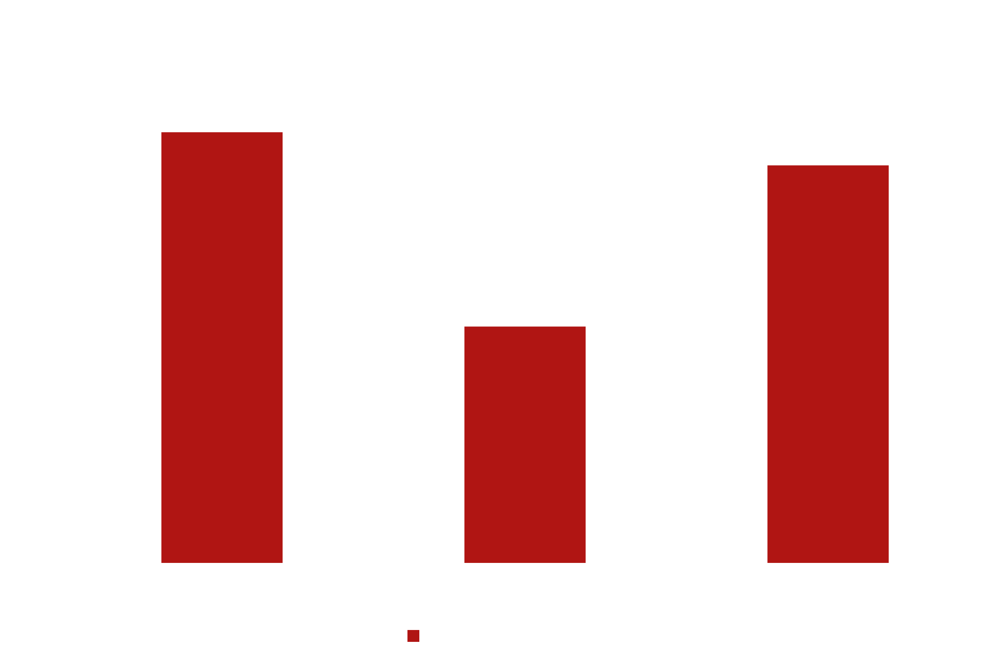

OverBridge LLC. Possible Benefit Package Supplementation
OverBridge employees currently have a benefit package in which employees receive benefits such as health care coverage, dental coverage, and 401k options. As the option is available, added benefits will be considered to be added as a supplement to the current package and as such, a survey was conducted to determine which supplement employees wish to have.
As a recap, these are the possible options to be added to employee benefits package.
Wellness Program
Overbridge LLC. will provide employees with personal coaches, gym memberships, and other services in exchange for a reduced health premium.
Paid Family Medical Leave Benefit
Overbridge LLC. will provide qualified employees up to 12 weeks of paid, job-protected leave per year ontop of state and federal regulations.
A Combination of Both
A program that would provide up to 6 weeks of paid FMLA leave and Wellness Program incentives (up to 4% reduction in health premiums).
Of The Employee Chosen Benefits, Which Benefit Should Be Implemented?
Paid Family Medical Leave 1
Benefits
Improves employee morale
Decreases work environment stress
Improves employee retention
Drawbacks
Expensive to maintain workers
Part-Time or Temp workers needed to fill missing employees
Management hassle in ensuring no scheduling conflicts, etc.
Wellness Program (With health premium reduction)2
Benefits
Improves employee morale
Increases employee recruitment and retention
Encourages employees comaraderie
Reduces health risks in work environment
Drawbacks
Possible health privacy issues
Alientation of certain groups of employees
Employee disinterest may result in less results
Cost to start and maintain program for all employees
What Is Recommended

While employees overall want the 12-week paid family medical leave, a large number of employee's chose a combination of both benefits. As such, Overbridge LLC. is recommended to implement the combo supplement to the package as, while not having the most benefits as choosing one supplement over the other, will grant overall satisfaction as both options have been added in some way or form.
What Challenges Do We Expect To Face?
Through implementing both supplements in a combination, we can expect to see all the benefits listed above while also dealing with the same challenges presented in both options.
These challenges include:
Circulating workers
As Overbridge LLC. is a company of 2,000 employees, we will need to have plans in place to ensure that absence of employees for 6 weeks will not affect project completion and result in overall decrease in productivity.
Health Privacy Concerns
Due to the sensitive data needed to qualify employee's for both supplements, controls need to be set in place to ensure information does not leak and result in possible lawsuits towards the company.
Costs to Company
Annual budget must include financing for supporting multiple employees' paychecks for up to 6 weeks each while also accounting for gym membership enrollment and maintaining which can be 10$ monthly per employee should the cheapest option be chosen3, 4.
Creation of Department
As a combination of supplements require increased attention to scheduling, medical records, and 3rd party organization services, a new department dedicated to employee benefits management would need to be created.